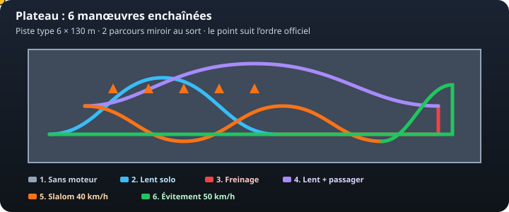
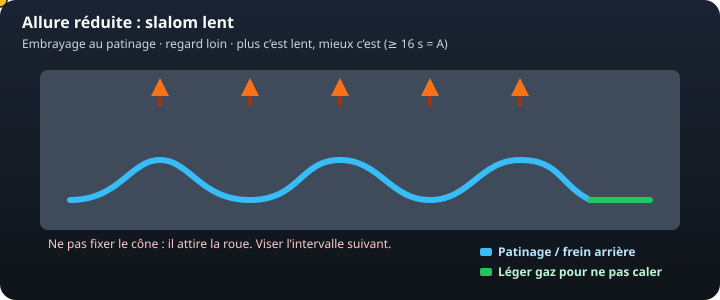
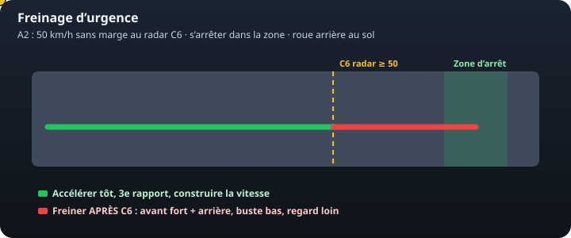
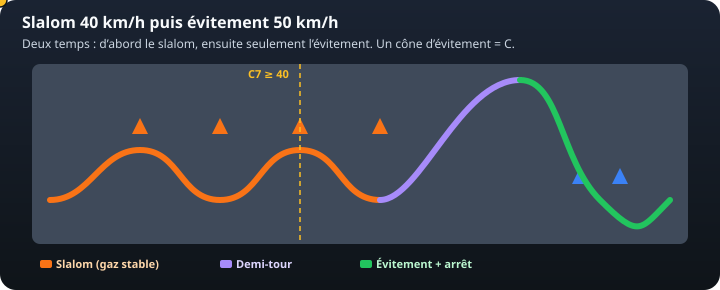

Bleu — patinage
Embrayage au point de patinage + un doigt de frein arrière. C’est ça qui rend la moto lente et stable. Le regard vise l’intervalle suivant, pas le cône sous la roue.
Pratique · hors circulation
Depuis le 1er mars 2020, les six manœuvres s’enchaînent sur une piste d’environ 6 m × 130 m. Deux tracés miroir : on tire au sort. Il faut un A ou un B. Un C aux deux essais ajourne. Une chute (hors poussette) arrête l’épreuve.
Le point jaune parcourt l’ordre officiel. Ce schéma est pédagogique : le jour J, c’est le plan du centre d’examen (souvent Codes Rousseau) qui fait foi.

3 pieds au sol « gratuits » sur tout le parcours dynamique si la poussette est réussie (2 seulement si elle est ratée), hors zones d’arrêt. Le 4e pied = B, le 5e = C. Deux pieds du même côté dans le même déséquilibre = un seul.
Trajectoire : ligne droite guidée, avant jusqu’à ce que la roue arrière passe les cônes, puis marche arrière jusqu’à ce que la roue avant les repasse. Béquille à la fin.

Embrayage au point de patinage + un doigt de frein arrière. C’est ça qui rend la moto lente et stable. Le regard vise l’intervalle suivant, pas le cône sous la roue.
Un filet d’accélérateur pour ne pas caler, jamais un coup de poignet. On n’accélère pas pour « rattraper » un cône : on ouvre le virage avec le regard et le bassin.
Frein avant au lent = plonge et pied à terre. On réserve l’avant au parcours rapide. Chrono : ≥ 16 s = A, 14–16 s = B, < 14 s = C.
Grosse difficulté : fixer le cône (la moto y va), relâcher l’embrayage par à-coups, se raidir. S’entraîner : slalom de gobelets à 2,50 m, objectif « le plus lent possible sans pied ». Comptez à voix haute.

Entraînement : même ligne, un plot « radar » et une boîte d’arrêt. Répéter jusqu’à tomber dans la boîte et voir 50 au compteur au plot.
Même famille que le lent solo, avec 80 kg qui changent l’assiette. Le passager : deux mains aux poignées, pieds sur les repose-pieds, genoux serrés, il ne parle pas du tracé (sinon C).
Frein arrière encore plus utile. Départ en douceur : l’embrayage rattrape le poids. Entraînement : sac lesté d’abord, puis un vrai passager calme.

Un cône d’évitement touché = C. Erreur de parcours, sortie de piste, arrêt hors zone = C. Deux B = un C.
Le plateau valide la maîtrise. La trajectoire de sécurité, elle, est notée en circulation. Les deux se travaillent ensemble : regard loin, pas de corde, phases séparées.